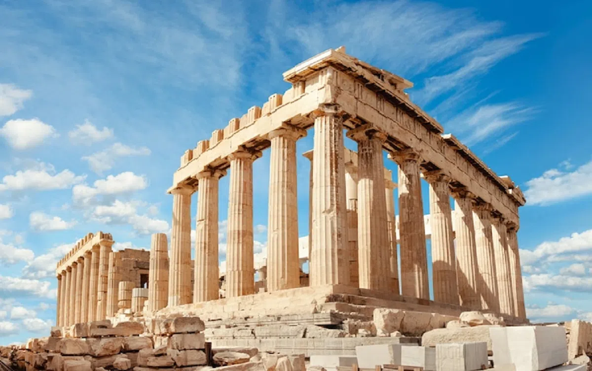
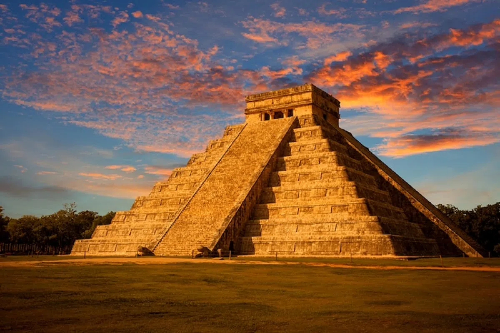
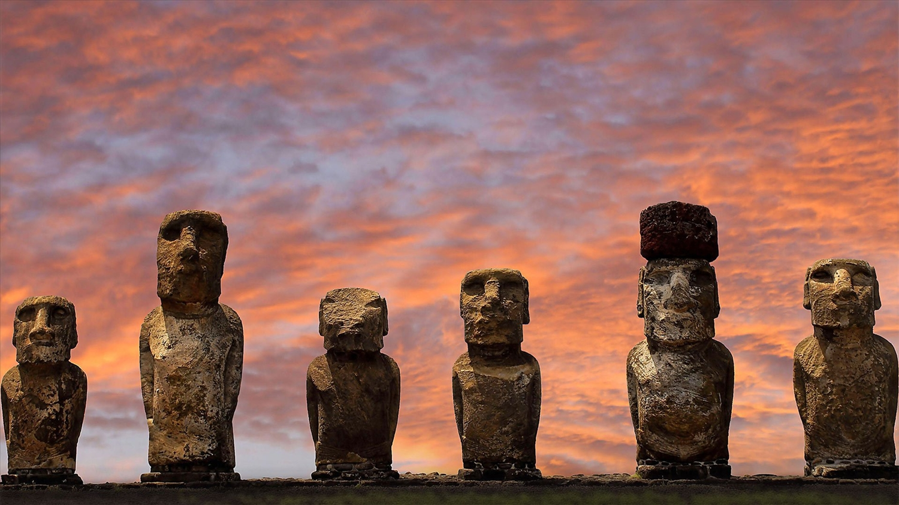
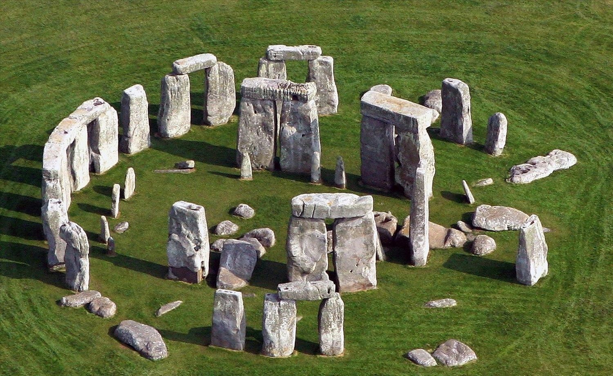
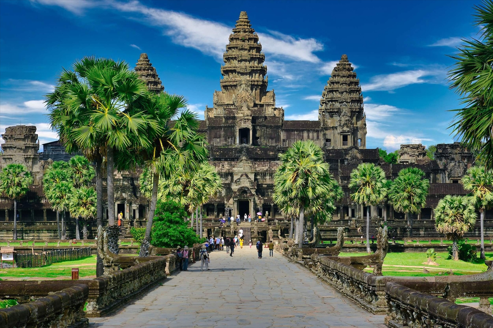

I. Di tích lịch sử phương Đông.
1. Cung điện Potala tại Tây Tạng.
Xem chi tiết
2. Tu viện Taktsang thuộc Bhutan.
Xem chi tiết
3. Hoàng thành Thăng Long.
Xem chi tiết
4. Kinh đô Ayutthaya tại Thái Lan.
Xem chi tiết
II. Di tích lịch sử phương Tây.
1. Quần thể kim tự tháp Giza. El Giza, Ai Cập.
Xem chi tiết
2. Parthenon. Athens, Hy Lạp.

Xem chi tiết
3. Nhà thờ Hagia Sophia. Istanbul, Thổ Nhĩ Kỳ.
Xem chi tiết
4. Đền Kukulcan tại địa điểm khảo cổ Chichen Itza. Yucatán, Mexico.

Xem chi tiết
III. Di tích lịch sử phương Nam.
1. Machu Picchu, Peru.
Xem chi tiết
2. Tượng Moai trên đảo Phục Sinh, Chile.

Xem chi tiết
3. Stonehenge, Anh

Xem chi tiết
3. Đấu trường La Mã, Italy.
Xem chi tiết
IV. Di tích lịch sử phương Bắc.
1. Vạn Lý Trường Thành, Trung Quốc.
Xem chi tiết
2. Thành phố cổ Bagan, Myanma.
Xem chi tiết
3. Angkor Wat, Campuchia.

Xem chi tiết
4. Ayutthaya, Thái Lan.
Xem chi tiết